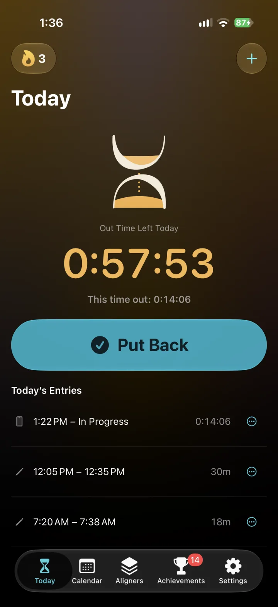
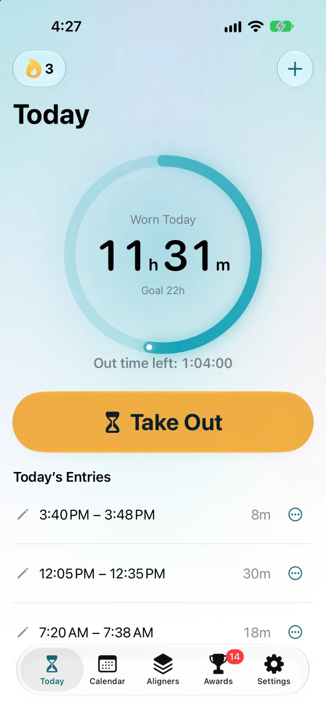

Countdown on your Lock Screen
A Live Activity keeps the countdown on your Lock Screen and in the Dynamic Island, so a glance is all it takes.
Take your aligners out with one tap and watch today’s out time count down. When it runs out, an alarm rings—even in Silent mode—so you never forget to put them back.


The hourglass flips and today’s remaining out time starts counting down.
Check the countdown in the app, in the Dynamic Island or on your Lock Screen.
Worn time and your progress ring update instantly—with a burst of sparkles when you’re on time.
Real screens from Glasshour, filled with demo data.
A Live Activity keeps the countdown on your Lock Screen and in the Dynamic Island, so a glance is all it takes.
When today’s out time runs out, Glasshour rings like an alarm—even in Silent mode or a Focus. Tap ✓ once they’re in, or it rings again in 10 minutes.
Gentle reminders too: time running low, “Still eating?”, a bedtime check and tray change reminders.
The calendar colors each day by whether you met your goal. Feeling sick? Mark the day as paused.
Change days, expected finish date and checkups in one schedule. Postpone a change, switch early, go back a tray or start refinements.
34 awards in six tiers, from Bronze to a Legendary rainbow medal—for streaks, on-time put-backs, tray milestones and a few hidden surprises. Free for everyone.
Take out and put back from wherever is quickest.
Every entry is based on start and end times, never a background timer.
Forgot to tap? Edit any entry or add one later. Overlapping entries can be merged.
Tapped by mistake? Undo it right away.
Midnight snacks, time zones and daylight saving time are handled automatically.
Your data stays on your iPhone and, if you choose, in your own iCloud.
Every feature is free while Glasshour launches—no subscription, no in-app purchases.
All of this is included at no cost during launch. There’s nothing to buy.
Glasshour is on the App Store now. Ideas or bugs? We’d love to hear them on GitHub.